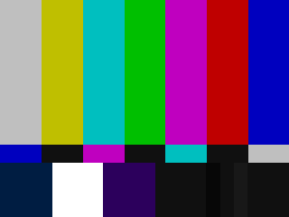

Intelligence Report: How To See Through Advertising
by Antero Alli, From verticalpool
 One of the many lesser known facts about Timothy Leary is his invention of a whole-brain model for intelligence (Info-Psychology; Falcon Press) which has since spawned two additional versions; one by myself (Angel Tech; Falcon.) and one by Robert Anton Wilson (Prometheus Rising; Falcon.). Dr. Leary's "Eight-Circuit Brain" theory suggests that "intelligence" is fundamentally plural by definition; an interaction of intelligences, or brains, begets more intelligence. Eight interactive functions of intelligence are defined by Leary and, in the creative process of making them my own, redefined as: physical, emotional, conceptual, social, sensory, psychic, imaginative and spiritual intelligences (readers of Angel Tech may notice a change from "mythic" intelligence to the more psychological "imaginative" intelligence).
This 8-Circuit model suggests that within each center, or function, there exists three phases necessary to each center's operation; these mirror the trinary activity of the most basic unit of biological intelligence, the neuron, in its capacity to ABSORB, INTEGRATE, and TRANSMIT information and/or energy. According to my understanding of this model, physical intelligence is increased to the degree one absorbs (receives), integrates (organizes), and transmits (expresses) physical experience. Apply this trinary function to each of the eight levels and you'll get an idea of the extraordinary implications: the realization of intelligence is entirely up to HOW each central neural (not nervous) system processes its own experiences. To the extent experience is not absorbed, not integrated, not transmitted—IN ONES OWN WAY—is the measure of ones ignorance and idiocy in whatever center lacks our presence. We are all greater idiots than we realize; getting past the vanity to admit it, is preliminary to the work of a World Entertainment Warrior. Since this 8-Circuit Brain model will be used to address intelligence issues, readers are encouraged to memorize the first four circuits.
ALERT: Imagination Death Precedes Loss of Soul
The current World Entertainment War is a form of information warfare, existing at the level of mind and perpetrated by a massive infiltration of gorgeous images and catchy buzzwords now upstaging millions of imaginations; images and fantasies enchanting enough to captivate the fancy of those minds who have stopped dreaming their own dreams. Remember, in the Information Age, real wars are no longer fought over mere physical territory but the internal landscapes of the psyche itself; whosoever governs the metaphor, governs the mind. Those who are not learning new ways of learning and those who are not thinking for themselves are already war casualties, often without knowing it.
Those imaginations corroded by Television Overdose, Media Debauch, and Advertising Bolemia are suffering the silent agonies of a slow death. If these words sound melodramatic and even paranoid, look again. The actual situation they refer to is far more dramatic and terrifying than most people care to imagine. Why? Our minds have been so super-saturated with slick simulations of reality, that for some of us, it is growing increasingly difficult to care about the difference...not just between "reality" and "fantasy" but between ones own fantasies and those mass-produced by corporate imagination killers. Imagination death is a condition preliminary to the death of soul; dampen a person's power for envisioning their own lives, their futures and you wash away an internal psychic environment that is house and home to a living soul. (Note: I've no time to prove or disprove the soul's existence; I trust its quandary to be sufficient enough to test and define the reader's own sensibilities and conclusions.)
There is a way to apply the 8-Circuit Brain model, in particular the first four centers, as a reference grid for deciphering advertising strategies and eventually, for seeing through them altogether. The first four circuits—physical, emotional, conceptual, and social—revolve around four inter-related levels of individual survival. Physical survival is not enough to nurture the life of a soul: there must be an emotional, conceptual, and social life, as well. To the extent one is not receiving, assimilating and communicating human experience in any combination of these four, is the extent one continues "spinning wheels in survival mode." Those centers hobbling along on one out of three pistons tend to be more vulnerable to external commands, ie., from whomever. Nobody knows this better than the media wizards working for corporate advertising executives, who play on the consumer's real and imagined deficiencies to sell their products.
THE WAY OF HOW
Intelligence, thanks to Quantum Physics, is no longer a WHAT but a HOW. Real intelligence thrives on process, not content. Any mind can fill itself with dead data and still remain fundamentally ignorant; many still do. The processes producing whatever contents fill a mind actually govern and regulate that content. WHAT something is, identifies it; HOW something happens, shows us its essence. Did you ever notice how the way someone says something means more than the content of the words themselves? The way of how. The way of how is utilized to great effect by the enemy—the Corporate Advertising Imagination Killers—to change the contents of the consumer mind without asking their permission. Shame. Shame. Shame.
Promotional tactics act on the low-esteem of the naive viewer, those minds which have not begun thinking for themselves and governing their own lives. The most sophisticated frontline advertising strategies involve covert methods to trick the consumer into believing their lives are in ways obvious and ways mysterious, incomplete and deficient without the promoted product; only through purchasing the commodity will the consumer's life be "whole" or "better" again. The successful advertiser exposes a need and then, makes a promise to meet it for a price. There is nothing inherently wrong about this; it makes good business sense. But when the images and the words that are used to sell a product fail to represent the product itself, we have false advertising and worse: subliminal manipulation of values. An example is when an automobile manufacturer uses the image of an attractive woman to sell a car, they are appealing to the unmet sexual needs of the male viewer (not to mention debasing the "image of women" as an object to sell cars with).
By superimposing the grid of the first four circuits over this general "deficiency" principle, very specific information jumps out at us. Each level of survival, from physical through social, is genetically motivated by specific rewards assuring satisfaction of specific needs: 1) SECURITY 2) STATUS 3) KNOWLEDGE and 4) SEX. Everybody defines and meets their needs for security, status, knowledge, and sex in different ways; the content of these needs are universal, the way of how they're met is personal. When needs aren't met, we are frustrated. This basic knowledge also forms the backbone of a successful advertising ploy: promise them anything but sell the product. By associating any product with the promise of more security or more status or more knowledge or more sex, the consumer's own unmet needs are touched and, they're hooked.
IMAGINATION BOOT CAMP TRAINING
Advertising is the business of promises, fantasies, and dreams: truth has never sold that well. Even the new "INFOtainment" shows on television (Current Affair, Cops, Funniest Videos, etc.) are slick attacks on the consumer need for the knowledge they're not getting in their actual lives. As World Entertainment Warriors, a kind of Boot Camp Training for the imagination is imperative not just for personal autonomy but for encouraging the autonomy of others. The 8-circuit grid is a good starting point, although any method which challenges the process of self-reclaimation—physically, emotionally, intellectually, and socially—can prove effective as long as each mind is mapping out their own experience. The bottomline to boot camp training is survival and learning how to be a survivor. In Boot Camp Imagination Training, expose your own needs to yourself and then, find your most creative ways of meeting them. This kind of offense is the best defense to commercial advertising which, as mentioned before, will promise you whatever you're not giving yourself.
The World Entertainment War is being fought over the WAY OF HOW which is, for the better part, largely unclaimed in most people. The public education systems are, in part, to blame for this ruthless atrocity. Remember: in school, young impressionable minds are taught to value knowns over unknowns, content over process, as a measure of not only intelligence but self-worth. Anyone remember the feeling of receiving your first "F" on your report card? The highest grades and the greatest approval goes to those minds willing and able to retain the densest volume of known facts; dead data depositories. The imagination becomes ill when the mind stops relating with unknowns; it bends over and dies, when a mind turns away from the abyss.
By redefining "security" and "status" and "intelligence" and "sexuality" according to what is most truthful to oneself, an extraordinary thing occurs: one begins to actually exist. And only that which really exists is subject to real change, real life. By defining ones terms, one stands a chance of living by them and cultivating the ground for the birth of a real being. Until then, we are non-entities at best...wannabees out for our next celebrity fix. Understandably, it takes a certain stance to see this. It is this very lack of stance which forces consumers to suffer as victims of the World Entertainment Wars, no matter how smart we think we are. Are we intelligent enough to confess ignorance, you know: the specific idiocy expressing our particular area of vacancy?
World Entertainment Warriors know it is far too late to avoid self-definition; "define yourself or be defined." Yet, World Entertainment Warriors also fight on the frontlines under camouflage of unexplainable poetry, seductive music and iconoclastic theatre; they evoke where their opponents explain and then, get away with murderous humor. World Entertainment Warriors hit the roads, rearranging highway billboard images to expose dangerous truths while circulating posters of political candidates carrying "Dial-A-Prayer" phone numbers. Most of all, World Entertainment Warriors use their wildest imaginations as combat weapons, as power tools and as mojo healing totems for inspiring people to death. If religion is the opiate of the masses then, the death of religion is the birth of poetry.